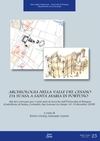
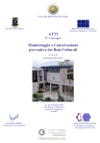
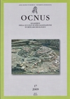
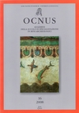
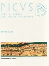
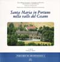
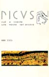
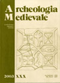
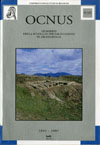
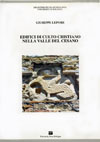

|  | E. GIORGI, G. LEPORE (a c.), Archeologia nella valle del Cesano da Suasa a Santa Maria in Portuno. Atti del Convegno per i venti anni di ricerche dell'Università di Bologna (Castelleone di Suasa, Corinaldo, San Lorenzo in Campo 18-19 dicembre 2008), Bologna 2010 |
|  | F. BONDIOLI, M.E. DARECCHIO, I. BERNABEI, S. LENCI, E. QUAGLIARINI, Q. PIATTONI, G. LEPORE, E. GIORGI, M. ZACCARIA, Approccio multidisciplinare allo studio della chiesa di Santa Maria in Portuno (AN), in Giuseppe Mascolo (a c.), Monitoraggio e Conservazione preventiva dei Beni Culturali, Atti del IV Convegno, 27-29 maggio 2010, Aula Magna "Luigi Papa" Facoltà d’Ingegneriam Cassino (2010) pp. 23-31 |
| G. LEPORE, Nuove ricerche nel sito di S. Maria in Portuno (Corinaldo): considerazioni per un approccio territoriale, in "Rimarcando" 4 (2009) pp. 54-62 |
|  | G. LEPORE, Corinaldo (An): chiesa di Santa Maria in Portuno, in "Ocnus" 17 (2009) pp. 158-162 (Scavi della Scuola e del Dipartimento di Archeologia) |
|  | G. BALDELLI, T. CASCI CECCACCI, G. LEPORE, M. PASQUALINI, S. Maria in Portuno a Corinaldo (Ancona): nuovi dati per la ricostruzione di un contesto archeologico pluristratificato, in "Ocnus" 16 (2008) pp. 11-34 |
|  | G. LEPORE, Fornaci sotto la chiesa di S. Maria in Portuno (Corinaldo): appunti per un censimento delle strutture produttive nelle Marche settentrionali, in "Picus" XXVIII (2008) pp. 161-172 |
|  | G. LEPORE (a cura di), Santa Maria in Portuno nella valle del Cesano (Percorsi di Archeologia, 4), Bologna 2006 |
|  | G. LEPORE, La pratica del reimpiego nella valle del Cesano. Note per lo studio di un territorio, in "Picus" XXXV (2005) pp. 63-116. |
|  | G. LEPORE et alii, Ricerche e scavi nel sito di S. Maria in Portuno presso Corinaldo (An): relazione preliminare degli anni 2001-2002, in "A.M." XXX (2003) pp. 345-365 |
|  | G. LEPORE, Corinaldo (An): scavi nella cripta della chiesa della Madonna del Piano, e Programma internazionale di studio dell'Augusteum di Narona, Croazia, in "Ocnus" 9-10 (2001-2002) pp. 283-286 e pp. 322-322 |
|  | G. LEPORE, Edifici di culto cristiano nella valle del Cesano (Pesaro-Ancona). La documentazione storica e archeologica tra tardo antico e medioevo (Monografie del Dipartimento di Archeologia, Collana Studi e Scavi, 14), Imola 2000. |
TESI DI LAUREA, SPECIALIZZAZIONE, DOTTORATO (ordine cronologico) |
| EMANUELA RAZZA, I processi post-deposizionali e le azioni di disturbo: il caso dell’area H di Madonna del Piano di Corinaldo, tesi di Laurea in Archeologia greca e romana presso l'Università di Bologna (Facoltà di Conservazione dei Beni Culturali), in preparazione |
| QUINTILIO PIATTONI, Archeologia ed ingegneria. Il problema degli elevati: dalla planimetria dello scavo archeologico alla terza dimensione dell'architettura. I casi di S. Maria in Portuno e la valle del Cesano., tesi di Dottorato in Ingegneria edile-Architettura (Università Politecnica delle Marche, Ancona) in preparazione |
| ANGELO PRESTIPINO, Problemi di architettura religiosa nelle marche: il caso di S. Maria in Portuno presso Corinaldo, tesi di Specializzazione in Archeologia Medievale, re. prof. Andrea Augenti (Scuola di Specializzazione in Beni Archeologici - Università di Bologna), a.a. 2008/09. |
| IRENE BERNABEI, Caratterizzazione di malte dai siti archeologici di S. Maria in Portuno e Suasa, tesi di Laura Specialistica in Scienze dei Beni Culturali della Facoltà di Scienze dell’Università degli Studi di Parma (rel. Prof.ssa FEDERICA BONDIOLI) a.a. 2008/09 |
| FEDERICA ANNUZZO, Studio archeoantropologico di alcune sepolture rinvenute nel sito di Madonna del Piano a Corinaldo (An) tesi in Antropologia presso l'Università di Bologna (Facoltà di Conservazione dei Beni Culturali di Ravenna) a.a. 2008/09 |
| GILDA ASSENTI, Il sito pluristratificato di Madonna del Piano di Corinaldo: analisi delle aree funzionali e delle variazioni nel tempo, tesi di Specializzazione in Storia dell'Urbanistica e dell'Architettura greca e romana (Scuola di Specializzazione in Archeologia, Università di Bologna) a.a. 2008/09 |
| FABIO VISANI, Rapporti fra aree produttive e aree insediative nelle città romane. Il caso di Suasa e il suo territorio, tesi di Specializzazione in Storia dell'Urbanistica e dell'Architettura greca e romana (Scuola di Specializzazione in Archeologia, Università di Bologna) a.a. 2008/09 |
| SIMONE ZAMBRUNO, "Il chiodo fisso". Chiodi e crani chiodati dalla classicità al medioevo nel territorio italiano, tesi di Laurea in Antropologia presso l'Università di Bologna (Facoltà di Conservazione dei Beni Culturali di Ravenna) a.a. 2007-08 |
| FRANCESCA DI TOMMASO, Analisi storica e proposta di valorizzazione del sito archeologico di Madonna del Piano in Corinaldo (AN), tesi di Laurea in Ingegneria edile-Architettura presso l'Università Politecnica delle Marche, Ancona (Facoltà di Ingegneria) a.a. 2007-08 |
| GIULIA DONATIELLO, La necropoli medievale di Madonna del Piano (Corinaldo - Ancona): studio antropologico dei resti scheletrici, tesi di Laurea in Antropologia presso l'Università di Bologna (Facoltà di Conservazione dei Beni Culturali di Ravenna) a.a. 2006-07 |
| TOMMASO CASCI CECCACCI, L'insediamento romano di Madonna del Piano presso Corinaldo (An), tesi di Specializzazione in Storia dell'Urbanistica e dell'Architettura greca e romana (Scuola di Specializzazione in Archeologia, Università di Bologna) a.a. 2006-07 |
| MARUSCA PASQUALINI, La necropoli di Madonna del Piano di Corinaldo (An): testimonianze materiali ed ipotesi interpretative, tesi di Specializzazione in Storia dell'Urbanistica e dell'Architettura greca e romana (Scuola di Specializzazione in Archeologia, Università di Bologna) a.a. 2006-07 |
| ANDREA BARONCIONI, Il sito di Madonna del Piano tra età romana e tardo antico, tesi di Specializzazione in Storia dell'Urbanistica e dell'architettura greca e romana, Scuola di Specializzazione in Archeologia, Università di Bologna, a.a. 2005-06 |
| SILVIA SANGIORGI, La carta archeologica della media valle del F. Cesano come strumento di tutela e valorizzazione culturale, tesi di Laurea in Topografia Antica presso l'Università di Bologna (Facoltà di Conservazione dei Beni Culturali di Ravenna), a.a. 2002-03 |
| LISA NANI, Analisi antropologica dei reperti scheletrici dell'area sepolcrale di età medievale della chiesa di Madonna del Piano (Corinaldo - An), tesi di Laurea in Antropologia presso l'Università di Bologna (Facoltà di Conservazione dei Beni Culturali di Ravenna), a.a. 2002-03 |
| ANDREA BARONCIONI, Archeologia dell'architettura nella valle del Cesano: la chiesa di Santa Maria in Portuno a Corinaldo (An), tesi di Laurea in Archeologia Medievale presso l'Università di Bologna (Facoltà di Conservazione dei Beni Culturali, Ravenna) a.a. 2001-02 |
| G. LEPORE, Edifici di culto cristiano nella valle del Cesano (Pesaro-Ancona). La documentazione storica e archeologica tra tardo antico e medioevo, tesi di Dottorato in Archeologia (Archeologia tardo antica e medievale) presso l'Università di Bologna, a.a. 1997-1999 |